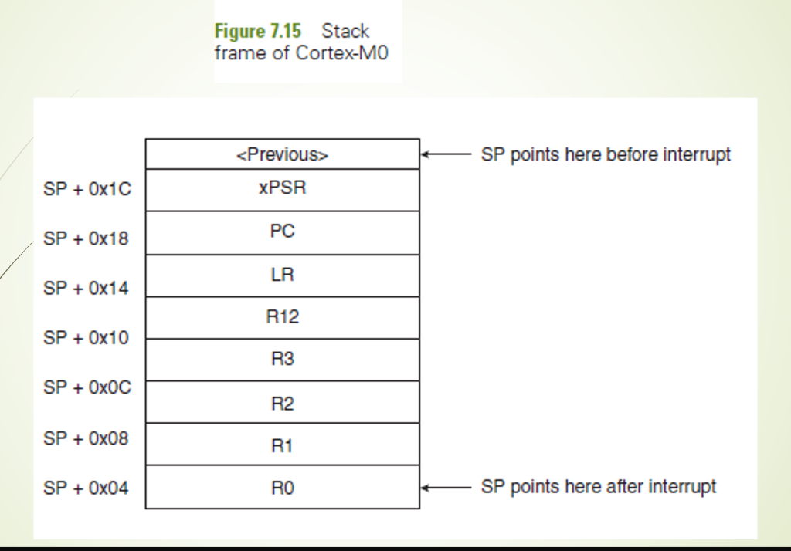
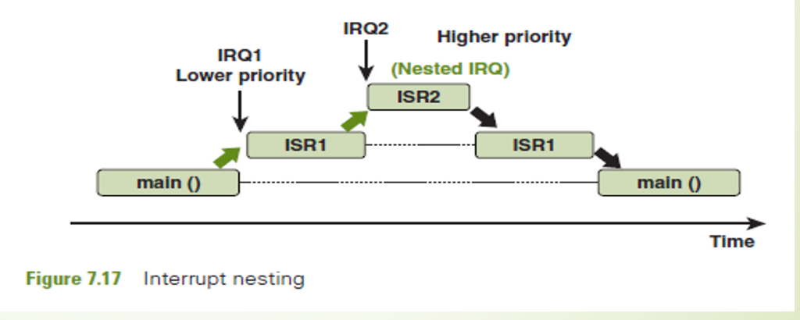
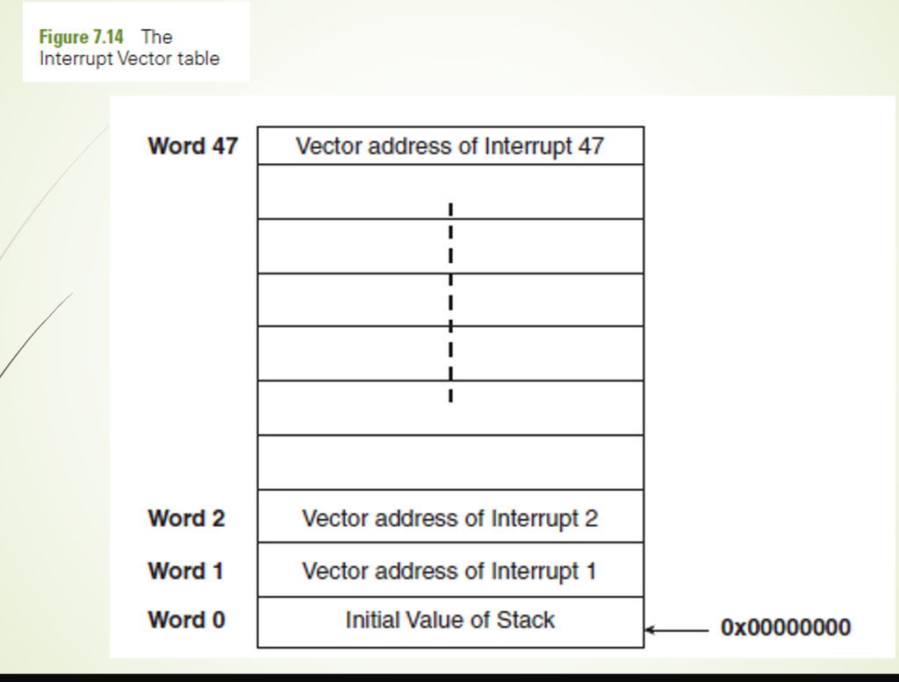
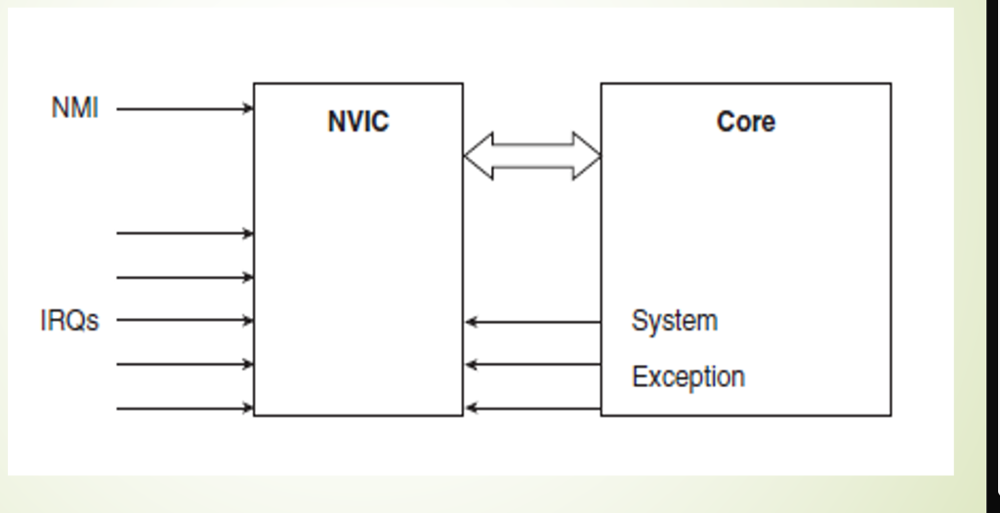
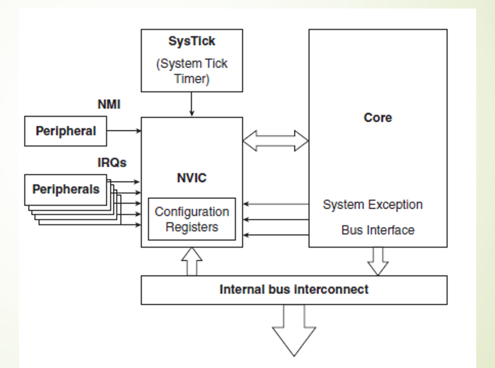

🎓 MSRIT/VTU Expert Faculty Study Portal | Conceptual Learning using NPTEL video lectures for cortex systems
The **ARM Cortex-M** is a family of 32-bit RISC processors designed specifically for low-cost, low-power microcontrollers (unlike the high-end Cortex-A series for mobile apps, or the safety-critical Cortex-R for real-time systems).
The **Cortex-M0** and **Cortex-M0+** cores represent the most gate-efficient architectures in the family. The main evolutionary leap in Cortex-M0+ is its hardware streamlining: while the standard Cortex-M0 uses a **3-stage pipeline** (Fetch, Decode, Execute), the Cortex-M0+ implements a highly optimized **2-stage pipeline** (Fetch, Execute). This structural change shrinks chip area, lowers power consumption, reduces the clock cycles lost during branching (pipeline flushes), and implements a dedicated **single-cycle I/O port** for instantaneous GPIO toggling.
• SEE 2023 Q9(b) / SEE 2023(O) Q9(a): Discuss the advantages of choosing Cortex M0 by the user for design of a processor. (10 Marks)
• SEE 2024 Q10(a): How has cortex-M0+ achieved the lower power levels than the cortex - M0? Justify. (10 Marks)
• SEE 2023(O) Q9(b) / SEE 2023 Q10(b): Discuss on three -stage pipeline for Cortex -M0 and Two-stage pipeline for cortex-M0+ with appropriate diagram for each. (12 Marks)
• SEE 2025 Q10(a): Discuss the advantages and architectural features of Cortex-M0+. (10 Marks)
Cortex-M0 uses a low-gate-count 3-stage pipeline. Cortex-M0+ optimizes this with an ultra-efficient 2-stage pipeline and a single-cycle GPIO port to maximize energy savings.
The Cortex-M0 programming model is highly simplified compared to the old ARM7TDMI. The processor operates in only **2 Modes**: 1. Thread Mode: The default mode entered upon reset. Used for executing normal application software. It can run in either privileged or non-privileged states. 2. Handler Mode: Entered automatically when an exception or interrupt occurs. The processor **always runs in a privileged state** while executing the ISR. Additionally, the processor operates strictly in the **Thumb State**, meaning it only executes compressed, power-saving Thumb instructions. It does not support the old 32-bit ARM instruction state, which simplifies the internal instruction decoder logic.
• SEE 2025 Q9(b): Explain Modes and states of Cortex- M0 processor. (10 Marks)
Cortex-M0 has 2 operating modes (Thread for user code, Handler for ISRs) and operates strictly in the Thumb state, utilizing banked MSP/PSP stack pointers to secure memory.
The ARM Cortex-M0 programming model contains a highly structured, banked register organization designed to support robust, multitasking real-time operating systems (RTOS) and secure kernel operations. It consists of 13 general-purpose registers (R0-R12), a banked Stack Pointer (R13 / SP), a Link Register (R14 / LR), a Program Counter (R15 / PC), and several special-purpose registers (xPSR, PRIMASK, CONTROL). R13 (Stack Pointer) is uniquely banked into two physical registers:
The processor selects the active stack pointer (SP) automatically based on the execution mode, or manually via software by configuring Bit 1 of the CONTROL Register. Thread mode can use either MSP or PSP, while Handler mode (exceptions/ISRs) always forces the use of MSP.
Cortex-M0 Exception Stack Frame: The diagram below illustrates the exact layout of the 8-word stack frame pushed onto the active stack by the hardware upon exception entry. The SP pointer initially points to the <Previous> top-of-stack. When an exception is recognized, the hardware decrements SP by 32 bytes (0x20) and pushes: xPSR (at SP + 0x1C), the return Program Counter PC (at SP + 0x18), the Link Register LR (at SP + 0x14), R12 (at SP + 0x10), and the general-purpose registers R3, R2, R1, R0 (with R0 at the bottom of the stack, SP + 0x00). After stacking, the SP points to R0 at its new base address, allowing immediate C-function compatibility for the ISR.

• SEE 2025 Q10(b): Draw and explain the register organization of the Cortex-M0 processor, detailing banked registers. (10 Marks)
How to write: When explaining registers, draw a block showing R0-R12 as general-purpose, and R13 explicitly split into parallel blocks labeled MSP and PSP. Emphasize that only ONE stack pointer is visible at any given time as R13. Detail that MSP is used for Handler mode, while Thread mode uses MSP or PSP. **viva focus**: What is the register number for SP, LR, and PC? (R13 = SP, R14 = LR, R15 = PC). Memory Trick: Stack Selection = M.P.H.T. (MSP for Handler, PSP for Thread).
R13 (SP) is banked into MSP (for kernel and exception ISR handlers) and PSP (for user application tasks), configured via CONTROL register Bit 1 to isolate kernel stacks from application-level failures.
Cortex-M0 processors use a **unified 4GB memory map** spanning addresses from 0x00000000 to 0xFFFFFFFF. Instead of having separate address systems for code, RAM, and IO registers, every component on the chip is mapped to a fixed region in this single, continuous address space.
To optimize execution and hardware performance, different regions have defined **Memory Access Attributes**: - **Normal Memory:** Cacheable and bufferable. Used for program code (Flash) and data variables (SRAM). - **Device Memory:** Non-cacheable. The processor cannot reorder read/write cycles to this region, ensuring hardware commands occur in the exact sequence written. Used for general peripherals (GPIO, UART). - **Strongly-Ordered Memory:** Non-cacheable and strictly ordered. The CPU halts until memory access completes. Used for core system peripherals like the NVIC.
• SEE 2025 Q9(a) / MAKEUP2023 Q9(a): Explain the memory model of Cortex -M0 and explain types and attributes of memory. (10 Marks)
• SEE 2023 Q9(a) / SEE 2023(O) Q10(a): Discuss with appropriate diagram for a memory map model for the cortex-M0 processor. (10 Marks)
• SEE 2024 Q10(b): Discuss the memory model of cortex-M0. (10 Marks)
Cortex-M0 has a fixed 4GB memory map divided into Code, SRAM, Peripheral, and System (PPB) regions, each governed by specific access attributes (Normal, Device, Strongly-Ordered).
The **Nested Vectored Interrupt Controller (NVIC)** is a highly advanced, tightly integrated hardware peripheral built directly into the silicon core of the ARM Cortex-M0 processor. Unlike traditional processors like ARM7, where interrupt nesting, state stacking, and vector fetches had to be managed with complex assembly software wrappers, the NVIC executes all of these critical processes entirely in **hardware**.
It supports up to 32 external interrupts (IRQs) and 16 internal system exceptions. It provides 4 programmable priority levels (0 to 3, where 0 is the highest priority). The NVIC manages exception handling via three primary concepts:
B ISR_Handler). Instead, it stores the actual 32-bit physical memory start addresses (vectors) of the ISR functions directly. The NVIC loads the vector from memory and jumps to the handler in a single step.0xE000E100.Nesting and Vector Layout: The diagrams below illustrate interrupt nesting, NVIC connections, and the Interrupt Vector Table. In Figure 7.17, while main() is executing, a lower priority IRQ1 occurs. The processor preempts main() and enters ISR1. Mid-execution, a higher priority IRQ2 occurs. The NVIC preempts ISR1 instantly, branching to ISR2 (Nested IRQ). When ISR2 completes, the processor returns to ISR1, and finally resumes main(). The Interrupt Vector Table (Figure 7.14) starts at address 0x00000000. Word 0 stores the initial value of the stack pointer (MSP). Words 1 to 47 store the physical 32-bit vector addresses of the respective exceptions (Word 1 for Reset, Word 2 for NMI, up to Word 47 for Interrupt 47). The NVIC block diagram shows the core connections where peripheral IRQs and NMI feed into the NVIC configuration registers, communicating with the core while interacting with system exceptions and bus interfaces.



• SEE 2023 Q10(a) / SEE 2023(O) Q10(b): Briefly discuss on the use of NVIC in the cortex processor, list out the channel numbers for various interrupt sources. (10 Marks)
• SEE 2024 Q9(a): Draw and explain the exception model of ARM Cortex-M0. Outline the advantages of NVIC. (8 Marks)
How to write: In exam answers, draw the preemption timeline (Figure 7.17) showing ISR1 being split by ISR2. Write down that Word 0 of the vector table is the Stack Pointer value, and Word 1 is Reset. Highlight that NVIC uses **hardware auto-stacking**, meaning standard C-language functions can act as ISRs without assembly wrappers. **viva focus**: What registers are automatically saved on the stack by NVIC? (R0-R3, R12, LR, PC, xPSR). Memory Trick: Priority Level Rule = L.N.H.P. (Lower Numeric value = Higher Priority).
NVIC is a hardware-driven interrupt manager built into the core, supporting up to 32 IRQs, 16 system exceptions, and 4 priority levels. It implements auto-nesting, zero-latency vector fetching, and late-arrival/tail-chaining optimizations.
Modern embedded nodes (like IoT sensors) spend most of their lifetime idle, waiting for an external event (like a sensor threshold or button press). If the CPU core runs at full speed continuously during these idle periods, it drains the battery in a few days.
To solve this, the Cortex-M0 core incorporates native **Power Management sleep modes** triggered by two core assembly instructions: - WFI (Wait For Interrupt): Stops the CPU clock immediately. The processor enters a low-power sleep state and wakes up as soon as any enabled interrupt is triggered. - WFE (Wait For Event): Suspends execution until a hardware event (like a SEV instruction or RXEV pulse) occurs.
Cortex-M0 manages power via sleep states. WFI and WFE put the processor to sleep, and SLEEPONEXIT automates entering sleep after exiting an interrupt handler.
Each interrupt managed by the NVIC exists in one of four distinct states at any given moment: - Inactive: The interrupt is disabled or has not been triggered. - Pending: The interrupt event has occurred (hardware pulse received) but has not yet been serviced by the CPU because a higher-priority task or interrupt is running. - Active: The interrupt is currently being serviced by the CPU, meaning the processor is executing its corresponding Interrupt Service Routine (ISR). - Active & Pending: The CPU is currently executing the ISR for this interrupt, and **another pulse** has arrived on the same interrupt line, indicating a second request is waiting to be processed.
• MAKEUP2023 Q10(b) / SEE 2025 Q10(b): List and Explain the interrupts of Cortex-M0 and different states that each interrupt can be in at any time. (10 Marks)
Interrupt status transitions through Inactive, Pending (waiting for CPU), Active (executing ISR), and Active & Pending (re-triggered during execution) states in the NVIC.
A complete ARM Cortex-M0 microcontroller System-on-Chip (SoC) contains multiple mandatory functional blocks integrated onto the silicon die. These tightly-coupled blocks collaborate to handle data execution, interrupt management, timing, memory bus transactions, and debug interfaces:
SoC Internal Block Interconnect: The block diagram below illustrates the exact integration of the mandatory functional blocks inside the Cortex-M0. The Core is directly coupled with the NVIC and the SysTick (System Tick Timer). External peripheral IRQs and the Non-Maskable Interrupt (NMI) feed directly into the NVIC block. The NVIC houses the Configuration Registers. The Core communicates with the NVIC and SysTick via system exception and control lines. The whole assembly connects to the Internal Bus Interconnect via system exception and bus interface buses, routing data and control lines out to the rest of the chip.

• SEE 2025 Q9(c): List and explain the mandatory functional blocks in the Cortex-M0 processor. (6 Marks)
How to write: When asked for functional blocks, draw a clear block diagram showing the Processor Core, NVIC, and SysTick connected together, with arrows routing to the Bus Interface. Explain the SysTick registers: SYST_CSR (Control and Status), SYST_RVR (Reload Value), and SYST_CVR (Current Value). **viva question**: What is the bit size of the SysTick counter? (24-bit down-counter). Memory Trick: Blocks Acronym = C.N.S.B.D. (Core, NVIC, SysTick, Bus Interface, Debug DAP).
Cortex-M0 SoC integrates the M0 CPU core, NVIC interrupt manager, internal 24-bit SysTick timer, AHB-Lite Bus Interface Unit (BIU) for memory transfers, and Debug Access Port (DAP) for JTAG/SWD hardware emulation.
The NVIC manages priority comparison for all exceptions (internal, system exceptions, and external interrupts): - **Fixed Priorities:** The three highest priority exceptions have hardcoded, non-configurable priority levels: Reset (Priority -3, highest), Non-Maskable Interrupt (NMI, Priority -2), and HardFault (Priority -1). They can preempt any other execution. - **Programmable Priorities:** All other exceptions (like SysTick, SVCall, and external GPIO/UART interrupts) have programmable priority levels from 0 (highest programmable) upwards. - **Priority Preemption Math:** A lower numerical value represents a higher priority. For example, an interrupt with priority 1 can preempt a running ISR of priority 2.
• SEE 2024 Q9(b): Discuss how priority assignment is done for all interrupts happening for the internal, external and system exceptions. (10 Marks)
Exceptions are managed via fixed (Reset, NMI, HardFault) and programmable priorities, where lower numerical values represent higher preemption priority.
Beyond standard registers, Cortex-M0 contains special-purpose registers accessed via MRS and MSR instructions:
- xPSR (Program Status Register): Combines three status registers:
- *APSR (Application PSR):* Holds condition flags (N, Z, C, V).
- *IPSR (Interrupt PSR):* Encodes the active exception number (0 if in Thread mode, or ISR number).
- *EPSR (Execution PSR):* Holds the T-bit (Thumb state).
- PRIMASK: A 1-bit global interrupt mask register. Setting PRIMASK = 1 disables all interrupts except NMI and HardFault, providing rapid critical-section locking.
- CONTROL Register: Bit 0 selects Thread mode privilege level (0 = Privileged, 1 = Unprivileged). Bit 1 selects the active Stack Pointer (0 = MSP, 1 = PSP).
Cortex-M0 special registers include xPSR (grouping math flags and active exception numbers), PRIMASK (global interrupt lock), and CONTROL (mode privilege, MSP/PSP selection).
Configuring external hardware interrupts in Cortex-M0 microcontrollers is handled natively using CMSIS (Cortex Microcontroller Software Interface Standard) core APIs. Unlike traditional MCUs where you had to write custom assembly code, CMSIS provides standardized structure pointers to access NVIC control registers directly.
The code below demonstrates initializing an external pin interrupt (e.g., EXTI/Pin Interrupt 0) and enabling it within the Nested Vectored Interrupt Controller (NVIC):
#include "LPC11xx.h" // LPC11xx Cortex-M0 Peripheral Access Layer Header
void EXTI_PIN_INT0_Init(void) {
// 1. Configure the GPIO pin (e.g. Pin 0.1) as an Input
LPC_GPIO0->DIR &= ~(1 << 1); // Set Pin 0.1 as input
// 2. Select trigger condition (e.g. falling-edge trigger)
LPC_GPIO0->IS &= ~(1 << 1); // Edge-sensitive trigger
LPC_GPIO0->IBE &= ~(1 << 1); // Single-edge trigger (governed by IEV)
LPC_GPIO0->IEV &= ~(1 << 1); // Falling-edge active
// 3. Clear any existing pending interrupts on this pin
LPC_GPIO0->IC |= (1 << 1);
// 4. Enable pin interrupt mask
LPC_GPIO0->IE |= (1 << 1);
/* 5. NVIC Configuration using Core CMSIS APIs */
// Set priority for EINT0 (Interrupt channel 0 in vector table).
// NVIC_SetPriority accepts: IRQ number, priority level (0 to 3)
NVIC_SetPriority(EINT0_IRQn, 2); // Set priority level 2
// Enable EINT0 exception processing in the NVIC
NVIC_EnableIRQ(EINT0_IRQn);
}
// 6. Define standard Interrupt Service Routine (ISR) mapped in vector table
void EINT0_IRQHandler(void) {
// Check if interrupt has occurred on Pin 0.1
if (LPC_GPIO0->MIS & (1 << 1)) {
// --- Execute Application Level Task (e.g. Toggle LED) ---
LPC_GPIO0->DATA ^= (1 << 2); // Toggle LED on Pin 0.2
// --- Critical Step: Clear pending flag ---
LPC_GPIO0->IC |= (1 << 1); // Write 1 to clear interrupt pin status
}
}NVIC_SetPriority(IRQn, priority): Configures the 2 MSBs of the corresponding 8-bit Interrupt Priority Register (IPR) to select priority levels 0 (highest) through 3 (lowest).NVIC_EnableIRQ(IRQn): Sets the corresponding bit in the Interrupt Set-Enable Register (ISER) located at PPB address 0xE000E100 to enable peripheral exception forwarding.The SysTick timer is a mandatory 24-bit hardware down-counter integrated inside the Cortex-M0 NVIC. It is used to generate periodic system ticks which act as the heartbeats for RTOS task switching.
System Tick Period Formula:
Rearranging the formula to find the exact register reload value:
Problem Statement: An RTOS task scheduler requires a system tick rate of exactly 1 ms (1000 Hz). The Cortex-M0 processor core runs at a clock frequency of 48 MHz. Calculate the SysTick reload value and write the initialization code.
#include "LPC11xx.h"
void SysTick_Init_1ms(void) {
// 1. Load the computed reload value (48000 - 1)
SysTick->LOAD = 47999;
// 2. Clear current counter value and clear status flags
SysTick->VAL = 0;
// 3. Configure Control and Status Register (CTRL)
// Bit 0: ENABLE (Enable the counter) -> 1
// Bit 1: TICKINT (Enable SysTick Exception Request) -> 1
// Bit 2: CLKSOURCE (Use Processor Core Clock) -> 1
SysTick->CTRL = (1 << 2) | (1 << 1) | (1 << 0);
}
// System Tick Interrupt Handler (ISR) called automatically every 1 ms
volatile uint32_t system_ticks = 0;
void SysTick_Handler(void) {
system_ticks++; // Increment tick counter for time tracking
}When an exception is triggered, the Cortex-M0 NVIC performs context saving in hardware by allocating an 8-word (32-byte) space on the active stack pointer (MSP or PSP) and copying CPU registers into this frame in a single, parallel process.
Trace Data Model:
0x20001000.1. The NVIC decrements the active stack pointer by 32 bytes (0x20): $$\text{New SP Base} = 0\text{x}20001000 - 0\text{x}00000020 = 0\text{x}20000\text{FE}0$$ 2. Pushes the context registers onto the newly allocated memory addresses starting at the base pointer offset.
| Memory Address | Stack Offset | Pushed Register | Value Example / Description |
|---|---|---|---|
0x20000FFC |
SP + 0x1C |
xPSR | 0x01000000 (Thumb execution state indicator) |
0x20000FF8 |
SP + 0x18 |
PC | 0x00001A42 (Program return point in interrupted thread) |
0x20000FF4 |
SP + 0x14 |
LR | 0xFFFFFFFD (EXC_RETURN: Thread Mode returning with PSP) |
0x20000FF0 |
SP + 0x10 |
R12 | 0x11111111 (General scratch register data) |
0x20000FEC |
SP + 0x0C |
R3 | 0x33333333 (Data operand 4) |
0x20000FE8 |
SP + 0x08 |
R2 | 0x22222222 (Data operand 3) |
0x20000FE4 |
SP + 0x04 |
R1 | 0x0000000F (Data operand 2) |
0x20000FE0 |
SP + 0x00 |
R0 | 0x00000001 (Data operand 1 / return register) |
Stack pointer outcome: After context saving completes, the active stack pointer `PSP` is updated to point to the base address 0x20000FE0, which contains `R0`. When the Exception handler exits, the hardware reads these specific stack offsets and restores register states instantly, reducing context restore overhead.
For critical low-level kernel routines, standard C is insufficient. Key operations—such as implementing global interrupt locks (critical sections) or switching Thread-mode execution from the default MSP to PSP—must be written in assembly using special system instructions.
The Keil Uvision ARM assembly blocks below outline how to manipulate special core registers:
; ===================================================================
; ROUTINE 1: Global Interrupt Locking (Critical Sections) via PRIMASK
; ===================================================================
; Setting PRIMASK = 1 disables all interrupts except NMI & HardFault.
; Used to isolate shared resources during non-reentrant routines.
DisableInterrupts FUNCTION
EXPORT DisableInterrupts
CPSID i ; Change Processor State: Disable Interrupts (PRIMASK = 1)
BX LR ; Return to calling routine
ENDFUNC
EnableInterrupts FUNCTION
EXPORT EnableInterrupts
CPSIE i ; Change Processor State: Enable Interrupts (PRIMASK = 0)
BX LR ; Return
ENDFUNC
; ===================================================================
; ROUTINE 2: Active Stack Pointer Switch to PSP via CONTROL Register
; ===================================================================
; Bit 1 of the CONTROL register selects stack source:
; CONTROL[1] = 0 -> Use MSP (Main Stack Pointer)
; CONTROL[1] = 1 -> Use PSP (Process Stack Pointer)
; Note: This routine can only execute in PRIVILEGED Thread mode.
SwitchToPSP FUNCTION
EXPORT SwitchToPSP
; 1. Assume R0 contains the memory address of the desired PSP stack top
MSR PSP, R0 ; Write new stack address to the PSP register
; 2. Read current CONTROL register status
MRS R0, CONTROL ; Read special register CONTROL into general register R0
; 3. Perform bitwise OR to set Bit 1 of CONTROL register
MOVS R1, #2 ; Load immediate mask 0x02
ORRS R0, R0, R1 ; Bitwise OR: set Bit 1 (CONTROL = CONTROL | 0x02)
; 4. Write back modified state to CONTROL register
MSR CONTROL, R0 ; Write contents back to CONTROL register
; 5. Crucial Step: Pipeline Synchronization Barrier
ISB ; Instruction Synchronization Barrier
; Flushes the pipeline, forcing processor to immediately
; resolve the new stack mapping before fetching next opcode.
BX LR ; Return to thread execution using the PSP stack!
ENDFUNCAnswer:
The ARM Cortex-M0 core represents a monumental shift in embedded engineering, offering 32-bit execution capabilities at an 8-bit price point. The principal architectural and commercial advantages of choosing the Cortex-M0 for processor design include:
Answer:
The execution pipeline is a fundamental architectural block that determines instruction execution speed, gate size, and power consumption.
1. Cortex-M0 3-Stage Pipeline:
The standard Cortex-M0 utilizes a 3-stage, classic pipeline structure:
**Cortex-M0 3-Stage Pipeline Layout:**
┌───────────────┐ ┌───────────────┐ ┌───────────────┐
───►│ Fetch Stage ├────►│ Decode Stage ├────►│ Execute Stage │───►
└───────────────┘ └───────────────┘ └───────────────┘
2. Cortex-M0+ 2-Stage Pipeline:
The evolutionary Cortex-M0+ streamlines the instruction pipeline down to just 2 stages: **Fetch** and **Execute** (which houses merged decoding and execution logic):
**Cortex-M0+ 2-Stage Pipeline Layout:**
┌──────────────────┐ ┌──────────────────┐
───►│ Fetch Stage ├──────────────►│ Execute Stage │───►
│ (Prefetch Buffer)│ │ (Decode + Exec) │
└──────────────────┘ └──────────────────┘
3. Justification: How Cortex-M0+ Achieves Lower Power Levels than Cortex-M0:
B LOOP or conditional branches) is taken, any instructions currently inside the pipeline must be cleared (flushed), creating execution delays (bubbles). A 3-stage pipeline loses 2 clock cycles during a branch flush, whereas the 2-stage pipeline only flushes 1 instruction, losing only 1 clock cycle. This reduces branch energy overhead by half and increases execution speed.Answer:
Unlike old architectures like ARM7TDMI which had 7 operating modes and 2 instruction states, the Cortex-M0 implements a highly streamlined, robust execution model consisting of 2 operating modes and 2 processor states to separate system software from application threads.
1. Modes of Operation:
2. Processor States:
3. Mode and State Transitions:
┌──────────────────────────────────────────────┐
│ THUMB STATE │
│ │
│ ┌──────────────────┐ Exception ┌─────────┐ │ Debug Halt ┌─────────────┐
│ │ Thread Mode ├──────────►│ Handler │ │───────────►│ Debug State │
│ │ (User Program, │◄──────────┤ Mode │ │◄───────────│ (CPU Halts) │
│ │ uses MSP/PSP) │ Return │ (ISRs, │ │ Debug Exit └─────────────┘
│ └──────────────────┘ │ always │ │
│ │ uses │ │
│ │ MSP) │ │
│ └─────────┘ │
└──────────────────────────────────────────────┘
BX LR with special code 0xFFFFFFFD), restoring the stacked registers and switching from Handler mode back to Thread mode.Answer:
The Cortex-M0 processor features a highly efficient, banked register set consisting of 13 general-purpose registers, banked Stack Pointers, a Link Register, a Program Counter, and several special registers.
**Cortex-M0 Register Organization Model:**
┌───────────────────────────────────────────────┐
│ R0 - R7 (Low General Purpose Registers) │ Accessible by all instructions
├───────────────────────────────────────────────┤
│ R8 - R12 (High General Purpose Registers) │ Limited instruction support
├──────────────────────┬────────────────────────┤
│ R13 (MSP - Banked) │ R13 (PSP - Banked) │ Stack Pointer (SP), only 1 visible
├──────────────────────┴────────────────────────┤
│ R14 (Link Register - LR) │ Stores subroutine return addresses
├───────────────────────────────────────────────┤
│ R15 (Program Counter - PC) │ Holds current execution address
├───────────────────────────────────────────────┤
│ xPSR (Program Status Register)│ ALU Flags & active exception number
├───────────────────────────────────────────────┤
│ PRIMASK (Interrupt Mask Register)│ Global interrupt enable/disable bit
├───────────────────────────────────────────────┤
│ CONTROL (Control Register) │ Selects SP stack and privilege levels
└───────────────────────────────────────────────┘
1. General-Purpose Registers (R0 - R12):
2. Banked Stack Pointers (R13 / SP):
Cortex-M0 implements Stack Pointer Banking, meaning there are two physical 32-bit stack pointers, but only one is visible as R13 at any given moment:
3. Subroutine and Program Execution Registers:
BL instructions) or stores the special **EXC_RETURN** code during an exception to signal exception return behavior.4. Special-Purpose Registers (xPSR, PRIMASK, CONTROL):
Answer:
The Cortex-M0 processor core utilizes a **unified, linear 32-bit continuous address space** spanning 4 Gigabytes (0x00000000 to 0xFFFFFFFF). Memory-mapped architecture means that Flash, SRAM, peripherals, and internal processor configuration registers all reside in the same continuous map.
1. Structural Memory Map Diagram:
Address Boundary Memory Region Name Description
┌──────────────────┐ 0xFFFFFFFF ──────────────────────────────────────────
│ 0xE0000000 │ System / PPB Private Peripheral Bus (NVIC)
├──────────────────┤ 0xDFFFFFFF ──────────────────────────────────────────
│ 0xA0000000 │ External Device External hardware registers
├──────────────────┤ 0x9FFFFFFF ──────────────────────────────────────────
│ 0x60000000 │ External RAM Off-chip expansion RAM
├──────────────────┤ 0x5FFFFFFF ──────────────────────────────────────────
│ 0x40000000 │ Peripherals On-chip IO (GPIO, UART, Timers)
├──────────────────┤ 0x3FFFFFFF ──────────────────────────────────────────
│ 0x20000000 │ SRAM Data variables, Stack, Heap
├──────────────────┤ 0x1FFFFFFF ──────────────────────────────────────────
│ 0x00000000 │ Code / Flash Vector table, Program executable
└──────────────────┘
2. Detailed Memory Region Breakdown:
0x00000000) and executable program Flash. Highly optimized for instruction fetching.0xE000E000 and 0xE000EFFF is the System Control Space (SCS), containing the NVIC, SysTick timer, and the System Control Block (SCB).3. Memory Access Attributes:
Answer:
The Nested Vectored Interrupt Controller (NVIC) is an advanced hardware exception controller built directly into the silicon core of the Cortex-M0 processor. Unlike traditional processors where interrupt nesting, context stacking, and address routing were managed in assembly wrappers, the NVIC executes all these actions entirely in hardware, guaranteeing exceptionally fast and deterministic latency.
1. Core Features of the Cortex-M0 NVIC:
2. Low-Latency Performance Optimizations:
Answer:
The Cortex-M0 handles exceptions via a unified prioritization framework, classifying exceptions into system exceptions and external peripheral interrupts.
1. Core Exceptions & Interrupts in Cortex-M0:
| Exception Number | Exception Type | Priority Number | Description |
|---|---|---|---|
| 1 | Reset | -3 (Highest) | System initialization upon power-on or hardware pin reset. |
| 2 | Non-Maskable Interrupt (NMI) | -2 | Critical hardware interrupt (e.g. clock failure). Cannot be disabled. |
| 3 | HardFault | -1 | All system failures and software errors (illegal opcodes, memory faults). |
| 11 | SVCall | Programmable | Supervisor Call triggered by `SVC` instruction for OS kernel services. |
| 14 | PendSV | Programmable | Pended system call used for RTOS context switching. |
| 15 | SysTick | Programmable | System Tick Timer exception triggered on down-counter overflow. |
| 16 – 47 | External Interrupts (IRQs) | Programmable | Peripheral interrupts (GPIO, Timers, UART, SPI, ADC, etc.). |
2. Exception States in the NVIC:
Each exception managed by the NVIC exists in one of four distinct states at any given moment:
Answer:
The Cortex-M0 is integrated into an SoC (System-on-Chip) using several mandatory functional blocks. These blocks are tightly coupled to handle data execution, interrupt routing, bus interfacing, and non-intrusive debugging.
1. SoC Internal Block Interconnection Diagram:
┌────────────────────────────────────────────────────────┐
│ Cortex-M0 SoC Core │
│ │
│ ┌──────────────────┐ ┌─────────────┐ │
│ │ │◄──────────────┤ SysTick │ │ SysTick Timer
│ │ │ Exception │ (24-bit Timer) │ (RTOS Heartbeat)
│ │ │ Line └─────────────┘ │
│ │ Processor │ │
│ │ Core │◄────────┐ │
│ │ (ALU, Registers│ │ System Exception │
│ │ Thumb-2) │ │ & Control │
│ │ │◄────────┼──────────────┐ │
│ │ │ │ │ │
│ └────────┬─────────┘ ┌─────┴──────┐ ┌─────┴──────┐ │
│ │ Data/Ctrl │ NVIC │ │ Debug │ │
│ ▼ │(Interrupts)│ │ Unit │ │
│ ┌──────────────────┐ └─────▲──────┘ └─────▲──────┘ │
│ │ Bus Matrix │ │ │ │
│ │ (AHB-Lite I/F) │◄────────┘ │ │ SWD/JTAG
│ └────────┬─────────┘ │ │ Debug Interface
└────────────┼────────────────────────────────┼──────────┘
▼ │
AHB-Lite System Bus ▼
(Flash, SRAM, Peripherals) Debug Access Port (DAP)
2. Detailed Explanation of Mandatory Functional Blocks:
Answer:
The Nested Vectored Interrupt Controller (NVIC) in Cortex-M0 implements a robust, hardware-based priority scheme to guarantee deterministic, low-latency preemption for critical exceptions.
1. Priority Scheme Categories:
2. Hardware Priority Representation:
00): Highest programmable priority.01): Second highest priority.10): Third highest priority.11): Lowest programmable priority.3. Preemption and Tie-Resolution Rules: